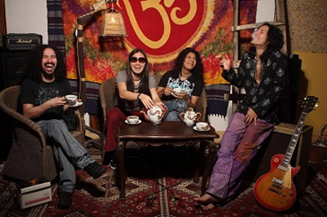

|  |
Año de formaciòn: 1995 Integrantes: Marcello Motta (voz, guitarra), Nathan Chara (bajo, coros), Henry Ueunten (teclados), Manuel Chávez (batería) Estilo : Rock and roll, Blues, Hard rock
|
||||||||
|
El virtuosismo de su guitarrista y cantante, Marcelo Motta, así como de su tecladista Henry Ueunten, afianzaron el estilo del combo y le dieron buena fama y gran proyección. Poco a poco Amén se hizo de gran oficio y de gran versatilidad para tocar. Para el año 1997 logran participar en un concurso de rock, ganándolo y con ello firmando su primer contrato discográfico.
Ahí nace su primer disco, “Libre”. Así, durante varios años se dedicaron a tocar en diferentes lugares de Lima y del interior del país, y la gente los empezaba a catalogar como un icono del rock en el Perú. En el 2004 lanzan su primer disco en vivo, grabado en La Noche de Barranco, uno de los lugares preferidos de la banda. A la par, entraron al estudio para grabar su nuevo disco, “Amén”. Un disco que tiene fusión de música india, africana en algunas melodías, y bases rítmicas sin perder el rock y el mensaje de paz que llevan la mayoría de sus canciones. En diciembre del 2008 lanzan su tercer disco, “Tiempos de resurrección”, en el que la banda refleja la madurez alcanzada durante sus casi 15 años de carrera. En el 2010 Aerosmith los eligió como sus teloneros para su concierto en Lima. |
|||||||||

|
|||||||||
|
|||||||||

 Libre (1997)
Libre (1997)